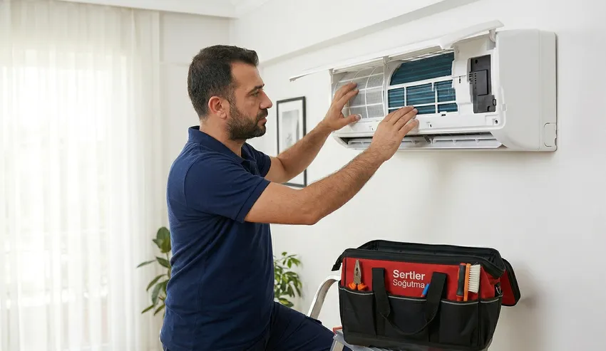

🌬️ Sağlıklı Nefes Alın: Sertler Soğutma Tarsus Klima Bakımı ile Havayı Temizleyin, Faturaları Düşürün!
Tarsus’un kendine has iklim koşullarında, nemin ve tozun yoğun olduğu bir coğrafyada yaşıyoruz. Bu şartlar altında klimalar, sadece birer soğutma veya ısıtma aracı değil; aynı zamanda kapalı alanlardaki havayı sürekli çeviren birer akciğer görevi görür. Ancak bu "akciğerlerin" sağlıklı bir şekilde çalışabilmesi için düzenli bir bakıma ihtiyaç duyduğu yadsınamaz bir gerçektir. Sertler Soğutma, profesyonel Tarsus Klima Bakımı hizmetiyle, hem cihazınızın performansını zirveye taşıyor hem de soluduğunuz havanın kalitesini en üst seviyeye çıkarıyor. Bir klimanın sadece çalışıyor olması, onun sağlıklı olduğu anlamına gelmez. Bakımı ihmal edilen bir cihaz, zamanla bir bakteri yuvasına dönüşebilir ve enerji sarfiyatını ciddi oranda artırabilir.
Tarsus Klima Bakımı dendiğinde akla gelen ilk isim olan Sertler Soğutma, bölgenin tozlu rüzgarlarını ve yüksek nem oranını teknik analizlerine dahil ederek hizmet verir. Tarsus'un meşhur sıcakları bastırmadan önce veya kışın keskin ayazları kapıya dayanmadan hemen önce yapılacak bir bakım, sizi beklenmedik arızalardan korur. Profesyonel bir bakımla, klimanızın iç ünitesindeki serpantinlerden dış ünitesindeki kondansere kadar her nokta titizlikle temizlenir. Bu sayede cihazınız, havayı soğutmak için daha az efor sarf eder, bu da doğrudan elektrik faturanıza indirim olarak yansır. Sağlıklı bir iklimlendirme süreci, doğru servis ve doğru yöntemlerle mümkündür.

Tarsus Klima Bakım Avantajları Nelerdir?
Düzenli olarak yaptıracağınız Tarsus Klima Bakımı, size kısa vadede konfor, uzun vadede ise ciddi bir ekonomik kazanç sağlar. Birçok kullanıcı, kliması bozulana kadar servis çağırmayı ihmal eder; ancak arıza sonrası ödenen tamir bedelleri, periyodik bakım ücretlerinin kat kat üzerindedir. Sertler Soğutma olarak sunduğumuz bakım hizmetinin en büyük avantajı "önleyici koruma" sağlamasıdır. Bakım sırasında cihazın tüm elektriksel bağlantıları, gaz basınç değerleri ve mekanik aksamları kontrol edilir. Bu kontroller sayesinde, ileride büyük masraflara yol açabilecek küçük aşınmalar veya gaz kaçakları erkenden tespit edilerek onarılır.
Ekonomik avantajların yanı sıra, Tarsus Klima Bakımı yaptırmanın en kritik faydası sağlık üzerinedir. Klima iç üniteleri, havadaki nemi yoğuştururken serpantinler üzerinde ıslak bir tabaka oluşturur. Bu ıslak zemin, tozla birleştiğinde küf, mantar ve lejyonella gibi tehlikeli bakterilerin üremesi için ideal bir ortam sağlar. Sertler Soğutma’nın profesyonel temizlik yöntemleriyle bu mikroorganizmalar tamamen yok edilir. Böylece özellikle astım, alerji veya üst solunum yolu rahatsızlığı olan bireyler için ev içi hava kalitesi steril hale getirilir. Bakımlı bir klima, kötü kokulardan arınmış, ferah ve taze bir hava üfler.
Bir diğer önemli avantaj ise enerji verimliliğidir. Tozla kaplanmış filtreler ve kirlenmiş dış ünite fanları, klimanın hava sirkülasyonunu zorlaştırır. Cihaz, hedef sıcaklığa ulaşmak için kompresörü daha uzun süre ve daha yüksek devirde çalıştırmak zorunda kalır. Sertler Soğutma tarafından gerçekleştirilen kapsamlı Tarsus Klima Bakımı sonrasında cihazınız nefes almaya başlar. Hava akışı rahatladığı için kompresör yükü hafifler ve enerji sarfiyatı %25 ile %40 arasında azalır. Bu, hem çevreyi korumak hem de aile bütçesine katkı sağlamak demektir. Tarsus gibi klimaların yaz-kış durmadan çalıştığı bir bölgede, bu tasarruf miktarı küçümsenemeyecek kadar değerlidir.
Sertler Soğutma Detaylı Klima Temizlik Protokolü
Sıradan bir temizlik ile profesyonel bir klima bakımı arasında büyük farklar vardır. Sertler Soğutma, her marka ve model cihaz için dünya standartlarında bir temizlik protokolü uygular. Bizim için Tarsus Klima Bakımı, sadece filtreleri musluk altında yıkamak değildir. Süreç, iç ünitenin dış kapağının sökülmesi ve evaporatör (serpantin) kısmına ulaşılmasıyla başlar. Bu noktada, cihazın elektronik kartlarını koruma altına alarak özel basınçlı makineler ve çevre dostu antibakteriyel solüsyonlar kullanıyoruz. Kimyasalın serpantin aralarına nüfuz etmesi sağlanarak, burada yerleşmiş olan tüm organik kirleticiler sökülüp atılır.
Temizlik protokolümüzün bir sonraki aşaması drenaj sistemidir. Klimanın ürettiği suyun tahliye edildiği kanal ve hortumlar, zamanla toz çamuruyla tıkanabilir. Sertler Soğutma teknisyenleri, Tarsus Klima Bakımı sırasında drenaj tavasını ve hortumlarını özel ilaçlarla yıkayarak su akışının kesintisiz olmasını sağlar. Bu işlem, iç üniteden su akıtma gibi can sıkıcı sorunların ve rutubet kokularının önüne geçer. İç ünitedeki fan pervanesi (cross-flow fan) de tek tek fırçalanarak dengeli dönmesi ve sessiz çalışması sağlanır. Kirli bir fan hem gürültü yapar hem de havayı yeterince ileriye itemez.
Dış ünite temizliği de bu protokolün ayrılmaz bir parçasıdır. Dış ünite, Tarsus'un sokak tozuna, polenlere ve çevresel kirliliğe en çok maruz kalan kısımdır. Sertler Soğutma, dış ünitenin kondanser kanatçıklarını basınçlı su ve özel çözücülerle temizleyerek ısı transfer kapasitesini artırır. Bir Tarsus Klima Bakımı seansında dış ünite temizlenmezse, yapılan işlemin verimi yarıda kalır. Son aşamada ise cihazın gaz basıncı manifoltlarla ölçülür, soket bağlantıları sıkılaştırılır ve cihaz çalışır vaziyette test edilerek müşteriye teslim edilir. Bu detaylı protokol, cihazınızın ömrüne ömür katan bir mühendislik dokunuşudur.
Tarsus’ta Periyodik Klima Bakım Hizmeti
Klima bakımı bir kez yapılıp unutulacak bir işlem değildir; sürdürülebilir konfor için periyodik bir takvime bağlanmalıdır. Sertler Soğutma, Tarsus ve çevresindeki tüm mahallelerde kurumsal ve bireysel müşterilerine düzenli periyodik bakım takvimi sunmaktadır. Özellikle yoğun kullanımın olduğu ofisler, mağazalar ve evler için yılda en az iki kez bakım yapılması uzmanlarca önerilir. Biz, Tarsus Klima Bakımı hizmetimizle müşterilerimizi "bakım zamanı geldi mi?" endişesinden kurtarıyoruz. Kayıtlı müşterilerimize mevsim geçişlerinde hatırlatmalar yaparak, cihazlarının her zaman en üst performansla çalışmasını sağlıyoruz.
Periyodik bakımın en büyük gücü, "arızayı oluşmadan durdurma" yeteneğidir. Tarsus bölgesinde elektrik voltaj dalgalanmaları veya aşırı sıcaklar nedeniyle klimaların kapasitörleri ve motor sargıları ciddi stres altındadır. Sertler Soğutma ekipleri, periyodik kontroller sırasında bu parçaların yıpranma paylarını ölçer. Bir kapasitörün ömrünün bittiğini bakım sırasında fark etmek, sizi yazın ortasında klimasız kalmaktan ve daha pahalı olan kompresör arızalarından korur. Tarsus Klima Bakımı bir gider kalemi değil, aslında cihazınızı koruyan bir sigorta poliçesidir.
Tarsus'un her mahallesine ulaşan geniş servis ağımızla, periyodik bakımları sizin takviminize uygun şekilde planlıyoruz. Sertler Soğutma olarak, sadece bakım yapmakla kalmıyor, cihazın kullanım geçmişine göre bir performans karnesi çıkarıyoruz. Eğer klimanızın yerleşimi yanlışsa veya kapasitesi yetersiz gelmeye başladıysa, uzmanlarımız size bu konuda rehberlik eder. Periyodik hizmetimiz, cihazınızın fabrikadan çıktığı ilk günkü verimliliğini, Tarsus'un zorlu şartlarına rağmen yıllarca korumasını sağlar. Profesyonel bir takip sistemiyle, iklimlendirme sorunlarınızın tamamen önüne geçiyoruz.
Sertler Soğutma ile Sağlıklı İklimlendirme
Sağlıklı bir iklimlendirme sadece serinlemek veya ısınmak değildir; havanın nemini dengede tutmak ve havayı partiküllerden arındırmaktır. Sertler Soğutma, sağlıklı iklimlendirme vizyonuyla hareket ederek, sunduğu her Tarsus Klima Bakımı hizmetinde hijyeni en ön planda tutar. Klimalar, filtreleri aracılığıyla ortamdaki tozu hapseder. Ancak bu filtreler doyuma ulaştığında, tozları geri havaya salmaya başlar. Daha da kötüsü, nemle birleşen bu tozlar serpantinler üzerinde mikrobiyolojik bir katman oluşturur. Biz, bu katmanı özel dezenfektanlarla bertaraf ederek, evinizi veya iş yerinizi sağlıklı bir yaşam alanına dönüştürüyoruz.
Havanın kuruluğu da sağlıklı iklimlendirmenin bir parçasıdır. Yanlış çalışan veya bakımsız kalmış bir klima, ortamdaki nemi kontrolsüz bir şekilde yok edebilir veya tam tersine aşırı nemli bırakabilir. Sertler Soğutma, Tarsus Klima Bakımı sırasında cihazın termostat ve sensör ayarlarını kalibre ederek nem dengesinin korunmasına yardımcı olur. Bu sayede cilt kuruluğu, göz yanması veya boğaz ağrısı gibi "klima çarpması" olarak bilinen şikayetlerin azalmasını sağlarız. Sağlık, doğru teknik müdahaleyle başlar.
Bizim için sağlıklı iklimlendirme, aynı zamanda gürültü kirliliğinden arınmış bir ortam demektir. Bakımsız klimaların çıkardığı uğultu ve titreşim sesleri, uzun vadede psikolojik yorgunluğa ve uyku bozukluklarına yol açabilir. Sertler Soğutma teknisyenleri, Tarsus Klima Bakımı esnasında fan balanslarını kontrol eder ve sürtünme noktalarını yağlar. Sonuç; kütüphane sessizliğinde çalışan, ferahlık veren ve sağlığınızı tehdit etmeyen mükemmel bir iklimdir. Tarsus halkının sağlığı bizim için her şeyden değerlidir; bu yüzden işimizi sadece teknikle değil, büyük bir titizlikle yapıyoruz.
### Tarsus Klima Bakımı Ne Zaman Yapılmalı?
Klima bakımı için en ideal zaman, cihazın yoğun olarak kullanılmaya başlanacağı "sezon öncesi" dönemlerdir. Tarsus'ta yaz sıcakları genellikle Nisan-Mayıs aylarında etkisini göstermeye başlar. Bu nedenle, ilkbahar ayları Tarsus Klima Bakımı için en çok tercih edilen ve teknik açıdan en verimli dönemdir. Cihazınızı yazın kavurucu sıcağında %100 kapasiteyle çalıştırmadan önce yapılan bir bakım, kompresörün aşırı ısınmasını önler. Aynı şekilde, kışın ısıtma modunda (heat mode) kullanılacak cihazlar için de Eylül-Ekim ayları bakım için idealdir.
Ancak, bazı özel durumlar bu takvimi değiştirebilir. Eğer klimanızdan kötü bir koku geliyorsa, üfleme debisinde azalma varsa veya cihazınız normalden daha gürültülü çalışmaya başladıysa, mevsimin ne olduğuna bakmaksızın hemen Sertler Soğutma uzmanlarını çağırmalısınız. Bu belirtiler, cihazın içinde ciddi bir kirlenme veya teknik bir aksaklık olduğunun habercisidir. Tarsus Klima Bakımı ertelendiğinde, basit bir temizlikle çözülebilecek sorunlar, zamanla parça değişimine kadar giden büyük arızalara dönüşebilir. Erken müdahale, her zaman en ekonomik yoldur.
Ticari işletmeler için bu takvim daha sıkı olmalıdır. Restoranlar, kafeler, kuaförler veya tekstil atölyeleri gibi tozun ve hava sirkülasyonunun çok olduğu mekanlarda filtreler 15 günde bir kullanıcı tarafından temizlenmeli, profesyonel Tarsus Klima Bakımı ise 3-4 ayda bir tekrarlanmalıdır. Sertler Soğutma, işletmenizin çalışma saatlerine uygun, iş akışınızı bozmayan esnek randevu sistemleriyle her zaman yanınızdadır. Unutmayın, bakımın zamanı cihazın performansıyla ve sizin sağlığınızla doğrudan ilişkilidir. Doğru zamanda yapılan müdahale, konforun kesintisiz sürmesini sağlar.
Sertler Soğutma İlaçlı Klima Temizliği
Piyasada "bakım" adı altında yapılan yüzeysel işlemlerden ayrıldığımız en önemli nokta, kullandığımız özel solüsyonlardır. Sertler Soğutma olarak uyguladığımız "İlaçlı Temizlik", klimanın metal yüzeylerine zarar vermeyen ancak organik kirleri saniyeler içinde çözen profesyonel kimyasalları içerir. Tarsus Klima Bakımı sırasında kullandığımız bu ilaçlar, biyosidal ruhsatlı olup, evde yaşayan evcil hayvanlara veya insan sağlığına herhangi bir zarar vermez. İlaçlı temizlik sayesinde, sadece gözle görülen tozlar değil, mikroskobik boyuttaki mantar sporları ve virüsler de yok edilir.
İlaçlı temizliğin bir diğer avantajı, serpantin aralarındaki alüminyum kanatçıkların (finler) arasını tamamen açmasıdır. Tarsus'un nemli havasında bu kanatçıklar arasında oluşan yapışkan kir tabakası, normal suyla çıkmaz. Sertler Soğutma’nın özel solüsyonu bu kirleri köpürterek yüzeye çıkarır ve ardından basınçlı durulama ile sistemden atar. Bir Tarsus Klima Bakımı sonrasında klimanızın metal aksamları adeta fabrikadan çıktığı parlaklığa ve temizliğe kavuşur. Temiz kanatçıklar, daha iyi ısı transferi ve daha düşük enerji tüketimi demektir.

Bu işlem sadece temizlik değil, aynı zamanda bir koruma kalkanıdır. Kullandığımız ilaçların bir kısmı, serpantin üzerinde ince bir film tabakası bırakarak tozun ve kirin metal yüzeye tutunmasını geciktirir. Sertler Soğutma kalitesiyle yapılan ilaçlı temizlik sonrası klimanızdan gelen hava, dağ havası kadar taze ve kokusuzdur. Tarsus Klima Bakımı hizmetimizde kullandığımız ekipman ve kimyasallar, sektördeki en son teknolojiye uygun olarak seçilir. Sağlığınızı ve cihazınızı şansa bırakmayın, profesyonel ilaçlı temizliğin farkını bizimle yaşayın.
Düzenli bakım ve doğru kullanım, arıza riskini azaltır ve cihazın ömrünü uzatır.
Tarsus Bölgesinde Filtre Değişim Hizmeti
Klimaların en önemli savunma hattı filtreleridir. Standart toz filtreleri genellikle yıkanabilir yapıdadır; ancak bazı modern klimalarda bulunan HEPA, Karbon veya Plazma filtrelerin belirli bir kullanım ömrü vardır. Sertler Soğutma, Tarsus ve çevresinde her marka klimanın orijinal yedek filtre temini ve değişim hizmetini sunmaktadır. Tarsus Klima Bakımı esnasında teknisyenlerimiz mevcut filtrelerin durumunu kontrol eder. Eğer yıkanabilir filtrelerde yırtılma veya deformasyon varsa, filtre görevini yapamaz ve tozların doğrudan motor kısmına kaçmasına neden olur. Bu durumda filtre değişimi şarttır.
Özellikle alerjik bünyeler için hayati önem taşıyan özel filtreler, havadaki en küçük partikülleri bile yakalar. Ancak bu filtreler dolduğunda hava akışını tamamen kesebilir veya verimi düşürebilir. Sertler Soğutma, bir Tarsus Klima Bakımı uzmanı olarak, hangi filtre tipinin sizin ihtiyaçlarınıza uygun olduğunu belirler. Karbon filtreler kötü kokuları hapsederken, gümüş iyon filtreler bakterileri etkisiz hale getirir. Tarsus'un bazen yoğunlaşan tozlu havasında, filtrelerinizin sağlığı klimanızın sağlığı demektir.
Filtre değişim hizmetimizde her zaman üretici onaylı, orijinal malzemeler kullanıyoruz. Yan sanayi filtreler, klimanın hava emiş kapasitesine uygun tasarlanmadığı için cihazın sesli çalışmasına veya aşırı ısınmasına neden olabilir. Sertler Soğutma güvencesiyle yapılan Tarsus Klima Bakımı seanslarında, filtreleriniz sadece temizlenmez, aynı zamanda işlevsellikleri test edilir. Eğer klimanızın filtreleri artık miadını doldurduysa, en kaliteli yedek parçalarla değişimini yerinde gerçekleştiriyoruz. Temiz bir filtre, ferah bir gelecek demektir.
Sertler Soğutma ile Tasarruf Odaklı Bakım
Günümüzde enerji tasarrufu sadece bir seçenek değil, bir zorunluluktur. Klimalar, bir evin veya işletmenin elektrik tüketiminde en büyük paya sahip cihazlardır. Sertler Soğutma, sunduğu Tarsus Klima Bakımı hizmetini "Tasarruf Odaklı" bir mühendislik süreci olarak tanımlar. Bakımsız bir klima, istediğiniz serinliği sağlamak için normalden %30 daha fazla elektrik tüketebilir. Bu durum, ay sonunda faturanızda ciddi bir yük oluşturur. Biz, cihazınızın verimliliğini optimize ederek bu yükü omuzlarınızdan alıyoruz.
Tasarruf odaklı bakımda odak noktamız kompresörün yükünü hafifletmektir. Tozlu bir dış ünite fanı veya tıkalı iç ünite filtreleri, kompresörün daha yüksek basınçta çalışmasına neden olur. Yüksek basınç, daha fazla amper çekilmesi yani daha fazla elektrik harcanması demektir. Sertler Soğutma teknisyenleri, Tarsus Klima Bakımı sırasında tüm bu mekanik engelleri ortadan kaldırır. Ayrıca, soğutucu akışkan (gaz) seviyesinin tam ayarında olması da tasarruf için kritiktir. Gazı eksik bir klima soğutma yapamaz ama durmadan çalışmaya devam eder. Biz gaz basınçlarını milimetrik olarak ayarlıyoruz.
Sadece temizlik değil, akıllı kullanım önerileriyle de tasarrufunuzu destekliyoruz. Bakım sonrasında teknisyenlerimiz, klimanızı Tarsus şartlarında en ekonomik hangi modda ve kaç derecede kullanmanız gerektiği konusunda sizi bilgilendirir. Sertler Soğutma ile yapılan bir Tarsus Klima Bakımı, kendini faturadaki düşüşle çok kısa sürede amorti eder. Hem cebinizi hem de doğayı korumak için, verimliliği tescilli servis hizmetimizden faydalanın. Enerjiyi boşa harcamayın, klimanızı uzmanına emanet edin.
#### Tarsus Klima Bakım Ücretleri
Klima bakımı konusunda kullanıcıların en çok merak ettiği konulardan biri maliyetlerdir. Sertler Soğutma olarak, Tarsus halkına şeffaf, dürüst ve erişilebilir bir fiyatlandırma politikası sunuyoruz. Tarsus Klima Bakımı ücretleri; cihazın tipi (duvar tipi, salon tipi, kaset tipi), BTU kapasitesi ve uygulanacak işlemin kapsamına (tekli ünite veya toplu bakım) göre değişiklik göstermektedir. Bizim fiyat politikamızdaki temel ilke, "en kaliteli hizmeti en adil fiyata" sunmaktır. Sürpriz maliyetler çıkarmadan, işe başlamadan önce tüm ücretlendirme hakkında size bilgi veriyoruz.
Ücretlerimizi belirlerken kullanılan profesyonel kimyasalların maliyeti, uzman personel işçiliği ve yol masrafları gibi kalemleri dengeli bir şekilde hesaplıyoruz. Şunu unutmamak gerekir ki, çok ucuza yapılan "üstün körü" bakımlar, aslında size daha pahalıya patlayabilir. Gerçek bir Tarsus Klima Bakımı; vakumlama, basınçlı yıkama, dezenfeksiyon ve teknik ölçümleri içermelidir. Sertler Soğutma, sunduğu kapsamlı paketlerle ödediğiniz her kuruşun karşılığını fazlasıyla verir. Verimlilik artışı ve fatura tasarrufu ile bakım maliyetiniz aslında kendi kendini karşılayan bir yatırımdır.
Birden fazla cihazı olan evler veya büyük kurumsal işletmeler için toplu bakım indirimleri sunuyoruz. Tarsus genelinde en iyi fiyat-performans oranına sahip servislerden biri olmaktan gurur duyuyoruz. Güncel Tarsus Klima Bakımı ücretleri ve size özel teklifler için çağrı merkezimizi arayabilir veya WhatsApp hattımızdan bize ulaşabilirsiniz. Kesin rakam vermekten ziyade, ihtiyacınıza en uygun paketi birlikte belirliyoruz. Kaliteli hizmet herkesin hakkıdır; biz bu kaliteyi ekonomik çözümlerle harmanlıyoruz.
Sertler Soğutma Bakım Paketi İçeriği
Bizi diğerlerinden ayıran en büyük fark, sunduğumuz bakım paketinin içeriğindeki detaylardır. Sertler Soğutma’dan bir Tarsus Klima Bakımı hizmeti aldığınızda, cihazınızın en küçük vidasına kadar kontrol edildiğinden emin olabilirsiniz. Standart bakım paketimiz şunları kapsar: İç ünite ön panel ve filtre temizliği, evaporatör (serpantin) ilaçlı dezenfeksiyonu, fan pervanesi temizliği, drenaj tavası ve hortumu yıkaması, dış ünite kondanser temizliği ve basınçlı suyla yıkanması. Bu adımlar, klimanızın hijyenik ve ferah çalışmasını sağlar.
Teknik kontrol listemiz ise temizlik kadar hayati önem taşır. Paketimiz dahilinde; soğutucu gaz (freon) basınç kontrolü, iç ve dış ünite fan motorlarının ses ve balans denetimi, elektriksel soket ve klemens bağlantılarının sıkılaştırılması, kompresör kalkış kondansatörlerinin (kapasitör) değer ölçümü ve uzaktan kumanda fonksiyon testleri yapılır. Bir Tarsus Klima Bakımı seansında, olası bir arıza riski tespit edilirse müşteri bilgilendirilir ve onayı alınırsa müdahale edilir. Bizim paketimiz, tam kapsamlı bir cihaz check-up hizmetidir.
Sadece fiziksel parçalar değil, klimanın yazılımsal tepkileri de incelenir. İnverter cihazlarda kart üzerindeki hata kodları taranır ve cihazın modlar arası geçiş performansı izlenir. Sertler Soğutma’nın hazırladığı bu detaylı paket, klimanızın performansını en üst düzeye çıkarmak için tasarlanmıştır. Tarsus'ta başka hiçbir yerde bulamayacağınız bu titizlikteki Tarsus Klima Bakımı paketimizle, cihazınızı uzun yıllar boyunca güvenle kullanabilirsiniz. Her adımda kalite, her noktada uzmanlık!
Anti-Bakteriyel Filtre Uygulamaları
Günümüz dünyasında hava yoluyla bulaşan hastalıkların ve alerjenlerin artmasıyla birlikte, klimadaki filtreleme sistemleri hiç olmadığı kadar önemli hale geldi. Sertler Soğutma, standart bakımlarının ötesine geçerek, talep eden müşterilerine özel "Anti-Bakteriyel Filtre ve Uygulama" seçenekleri sunar. Bir Tarsus Klima Bakımı sırasında uyguladığımız özel dezenfektan sisleme yöntemi, klimanın ulaşılması en zor kanallarına bile nüfuz eder. Bu işlem, havada asılı kalan virüs ve bakterilerin klimanız tarafından yakalanıp etkisiz hale getirilmesine yardımcı olur.
Anti-bakteriyel uygulamalarımızda kullandığımız ürünler, uzun süreli etkiye sahiptir. Serpantin yüzeyinde oluşturulan mikroskobik koruma tabakası, bakım sonrasında bile aylarca bakteri üremesini engellemeye devam eder. Tarsus gibi rutubetli bölgelerde en büyük sorun olan "klima kokusu", bu anti-bakteriyel işlemler sayesinde kalıcı olarak giderilir. Sertler Soğutma olarak, sağlığınızı korumayı görev biliyoruz. Tarsus Klima Bakımı sonrasında nefes aldığınızda farkı sadece burnunuzla değil, ciğerlerinizle de hissedeceksiniz.
Özellikle bebek odaları, yaşlı bakım merkezleri veya yoğun insan trafiği olan ofisler için bu uygulamaları şiddetle tavsiye ediyoruz. Standart bir temizlik tozu giderir, ancak profesyonel anti-bakteriyel uygulama sağlığı korur. Sertler Soğutma uzmanları, cihazınızın modeline en uygun ek filtreleme çözümlerini size sunar. Tarsus'ta daha sağlıklı bir iklimlendirme için sunduğumuz bu özel çözümler, yaşam kalitenizi bir üst seviyeye taşır. Hijyende sınır tanımayan Tarsus Klima Bakımı için bize güvenin.
Sertler Soğutma Mevsimlik Kampanyalar
Kaliteli hizmeti daha geniş kitlelere ulaştırmak adına, yılın belirli dönemlerinde özel indirimler ve kampanyalar düzenliyoruz. Sertler Soğutma, özellikle ilkbahar ve sonbahar aylarında "Sezon Hazırlık Kampanyaları" ile Tarsus halkına avantajlı fiyatlar sunar. Tarsus Klima Bakımı yaptırmak isteyen müşterilerimiz, bu kampanya dönemlerinde birden fazla cihaz için toplu bakım paketlerinden veya "Bakım+Gaz Kontrol" gibi kombine hizmetlerden çok daha uygun fiyatlarla faydalanabilirler. Kampanyalarımızı takip ederek, bütçenizi zorlamadan profesyonel hizmet alabilirsiniz.
Sosyal medya hesaplarımız ve web sitemiz üzerinden duyurduğumuz bu kampanyalar, sadece fiyat indirimi değil, bazen ek hizmetleri de (ücretsiz check-up, kumanda pili değişimi vb.) kapsar. Sertler Soğutma olarak, Tarsus esnafına ve emeklilerine özel dönemsel kolaylıklar sağlamaya da gayret ediyoruz. Tarsus Klima Bakımı hizmetinde kaliteyi herkes için ulaşılabilir kılmak bizim önceliğimizdir. Kampanya dönemlerimizde yoğunluk yaşandığı için, randevunuzu önceden oluşturmanızı tavsiye ederiz.
Sadık müşteri programımız sayesinde, her yıl düzenli bakım yaptıran müşterilerimiz kampanya dönemleri dışında da özel indirimlerden yararlanabilirler. Tarsus'un en güvenilen servislerinden biri olarak, hem cebinize hem de klimanıza dost çözümler üretiyoruz. Sertler Soğutma ile Tarsus Klima Bakımı yaptırmak hem akıllıca bir tercih hem de ekonomik bir kazançtır. Güncel kampanyalarımızdan haberdar olmak ve yerinizi ayırtmak için bizimle hemen iletişime geçin. Serinliğin ve ferahlığın tadını indirimli fiyatlarla çıkarın!
Hemen Servis Talebinde Bulunun
Arıza tespiti, bakım veya onarım için aynı gün içinde servis yönlendirebiliriz.
Sıkça Sorulan Sorular
Klimalar, dış ortamdaki tozu ve kiri filtreleri üzerinden çekerler. Tarsus'un nemli ikliminde bu tozlar serpantinler üzerinde çamurlaşarak bakteri üretir ve hava akışını engeller. Her yıl yapılan düzenli Tarsus Klima Bakımı, enerji tasarrufu sağlar, cihazın ömrünü uzatır ve sağlığınızı korur. Bakımsız bir klima %40 daha fazla elektrik harcayabilir.
Hemen bozulmayabilir ancak verimi hızla düşer. Bakımsız cihazlarda kompresör daha fazla ısınır, fan motorları zorlanır ve gaz kaçakları riski artar. Bu durum, basit bir bakım maliyetiyle kurtarılabilecekken, ileride çok daha pahalı olan kompresör değişimi gibi masraflara yol açar. Sertler Soğutma bu riskleri önceden yok eder.
Standart bir duvar tipi klimanın detaylı bakımı, cihazın kirlilik durumuna göre yaklaşık 45 dakika ile 1 saat arasında sürer. Sertler Soğutma teknisyenleri, hızı değil kaliteyi ön planda tutarak, cihazın her noktasını titizlikle temizler. Tarsus Klima Bakımı hizmetimizde aceleci değil, sonuç odaklı çalışıyoruz.
Klima bakımı ve gaz dolumu farklı işlemlerdir. Bakım paketimizde gaz basınçlarının ölçümü ve kontrolü dahildir. Eğer bir kaçak tespit edilirse veya gaz eksikliği varsa, müşteri bilgilendirilir ve onay alınırsa ek bir ücretle gaz takviyesi yapılır. Sertler Soğutma, dürüst servis anlayışıyla gereksiz gaz dolumu yapmaz.
Evet, kesinlikle çözer. Kötü kokunun ana kaynağı iç ünitedeki serpantinlerde ve drenaj tavasında biriken bakteri ve küflerdir. Sertler Soğutma’nın kullandığı özel antibakteriyel ilaçlar bu kokuyu kaynağında yok eder. Tarsus Klima Bakımı sonrasında havanızın ferahladığını hemen fark edersiniz.
Filtreleri 15 günde bir yıkamanız çok faydalıdır ancak yeterli değildir. Tozların büyük bir kısmı filtreleri aşarak serpantin aralarına ve fan pervanesine yerleşir. Buralara ulaşmak ve dezenfekte etmek profesyonel ekipman ve bilgi gerektirir. Sertler Soğutma’nın profesyonel Tarsus Klima Bakımı, sizin yapamadığınız derinlemesine temizliği sağlar.
Sunduğumuz bakım hizmeti, cihazın temizliği ve mevcut durumunun kontrolünü kapsar. Bakım esnasında yaptığımız işlemlerden kaynaklı herhangi bir aksaklıkta (örneğin su akıtma vb.) ücretsiz destek veriyoruz. Sertler Soğutma, işçiliğinin arkasında duran köklü bir firmadır.
Daikin, Mitsubishi, Arçelik, Beko, Bosch, Samsung, Gree, LG, Baymak ve daha birçok dünya markasının bakımını yapıyoruz. Teknisyenlerimiz tüm marka ve model cihazların teknik yapısına hakimdir. Tarsus Klima Bakımı konusunda geniş bir uzmanlık alanına sahibiz.
İnverter klimalar hassas elektronik kartlara sahiptir. Bu cihazların temizliği sırasında kartın sudan ve nemden korunması çok kritiktir. Sertler Soğutma, inverter cihazların teknolojisine uygun hassas temizlik yöntemleri uygular. Tarsus Klima Bakımı hizmetimizde teknolojiye saygı duyuyoruz.
Bize web sitemiz üzerindeki iletişim formundan, telefon numaralarımızdan veya WhatsApp hattımızdan ulaşabilirsiniz. Tarsus’un hangi mahallesinde olursanız olun, size en uygun zaman dilimi için randevunuzu hızla oluşturuyoruz. Sertler Soğutma ile ferahlığa bir telefonla ulaşın!
Sonuç ve Uzman Önerisi
Klima bakımı, Tarsus gibi sıcaklığın ve nemin hüküm sürdüğü bir şehirde asla ertelenmemesi gereken bir zorunluluktur. Cihazınızı sadece bir "soğutma kutusu" olarak görmeyin; o, sizin ve sevdiklerinizin yaşam kalitesini doğrudan etkileyen bir sistemdir. Sertler Soğutma olarak biz, yılların getirdiği tecrübe ve teknik donanımla, klimalarınızı sadece temizlemiyoruz; onları Tarsus şartlarına en dayanıklı ve verimli hale getiriyoruz. Profesyonel bir Tarsus Klima Bakımı, sağlığınıza yapılan bir yatırım, cebinize sağlanan bir tasarruftur.
Uzman önerimiz; klimanızı her yıl sezon başında profesyonel bir ekibe kontrol ettirmeniz ve kullanım sırasında filtreleri düzenli olarak kendiniz yıkamanızdır. Unutmayın, bakımlı bir klima sizi yarı yolda bırakmaz, sağlığınızı tehlikeye atmaz ve bütçenizi sarsmaz. Tarsus'ta güvenilir, şeffaf ve kaliteli bir hizmet arıyorsanız, Sertler Soğutma olarak her zaman yanınızdayız. Mevsim geçişlerini huzurla karşılamak, ferah ve sağlıklı bir havayı solumak için profesyonelliğin farkını bizimle yaşayın.
Sağlıklı, huzurlu ve tasarruflu bir iklimlendirme deneyimi için bugün randevunuzu alın. Sertler Soğutma ile her zaman ideal iklim, her zaman temiz hava! Tarsus Klima Bakımı bizim işimiz, sizin konforunuzdur.